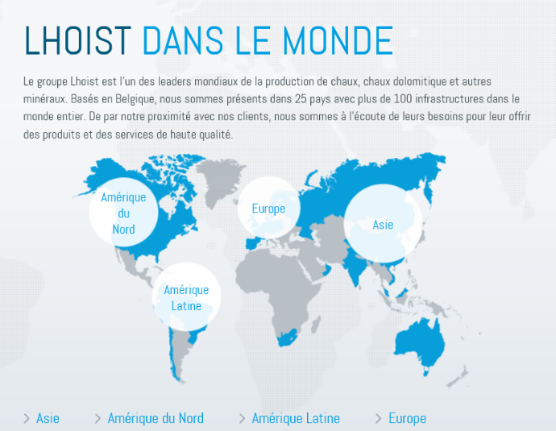

Rapport d'entreprise
Introduction
Le développeur que j’ai interviewé s’appelle Walter Böhnke. Il travaille dans le secteur de la programmation depuis 1999. Actuellement, Walter travaille en tant que consultant interne au sein de Lhoist. Il travaille également comme freelance au sein de sa SPRL appelée Canoas.
Organisation de la recherche de l'entreprise et de la personne exerçant le métier
Trouver une personne à interviewer a été un processus long. J’ai utilisé les réseaux sociaux professionnels tels que « LinkedIn ». J’y ai noué quelques contacts et j’ai réussi à trouver une personne voulant me parler de son quotidien de « développeur ».
Après plusieurs reports à cause du contexte sanitaire et des contraintes professionnelles, l’interview a eu lieu dans l’après-midi du vendredi 4 juin 2021.
1. Description de l'entreprise
- Coordonnées
Lhoist Group Rue Charles Dubois 28 B - 1342 Limelette Téléphone: +32-10 23 07 11 Fax: +32-10 23 09 50
- Activité principale
L’exploitation du calcaire.
- Nombre total de membres du personnel
Je n’ai pas pu obtenir le nombre exact d’employés de Lhoist en 2021. Je sais juste que le groupe Lhoist est présent en Europe, en Asie, en Amérique du Nord et en Amérique Latine. En 2017, le groupe Lhoist avait 6400 employés dans 100 pays.
"- Organigramme
Le groupe Lhoist a un CEO dont le nom est Marcos FRANCA. Il y a aussi 5 personnes qui forment la direction. Il existe un conseil d’administration
L’organigramme du groupe Lhoist est disponible ici.2. Description du département choisi et interview
- Présentation des activités
Walter Böhnke met en place des solutions pour le groupe Lhoist. Il travaille souvent à partir de la plateforme SAP.
- Présentation de la personne interviewée :
fonction occupée (titre et responsabilités)
Walter Böhnke est consultant « IT ».
éléments du parcours professionnel,
Walter Böhnke a fait une formation universitaire en gestion avant d’intégrer l’entreprise SAP. Il a ensuite fait un cursus de trois mois pour se spécialiser dans l’utilisation des outils SAP. Il a aussi fait une formation en « Data Science ».
éventuelles difficultés rencontrées,
Walter a peu de temps libre. L’interview a été reportée plusieurs fois.
conseils relatifs à l'exercice du métier
Il faut se former régulièrement car les technologies évoluent rapidement et la concurrence dans le secteur informatique peut être féroce.
3. Confirmation du choix d'orientation
- Eléments positifs
Je confirme mon choix pour cette formation de « développeur ». Je confirme pour plusieurs raisons dont le fait que ce métier me passionne et exige de se remettre souvent en question. Je questionne régulièrement mes certitudes et je suis convaincu que ce que je sais ou crois savoir est infinitésimal par rapport à ce qu’il me reste à apprendre.
- Réactivité aux éventuels éléments négatifs
Comprendre les méthodes de travail des sociétés informatiques me permet de savoir comment me comporter dans ce secteur d’activités.
Conclusion
- Le futur
Mon futur, c’est faire la formation qualifiante et trouver un stage puis un emploi dans ce secteur d’activités.
- Le stage de fin de formation
Pour l’instant, je n’ai pas trouvé un stage de fin de formation.